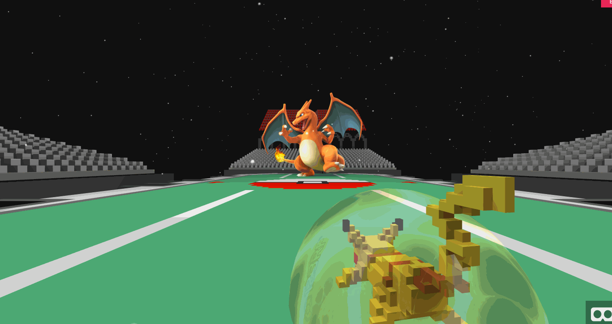
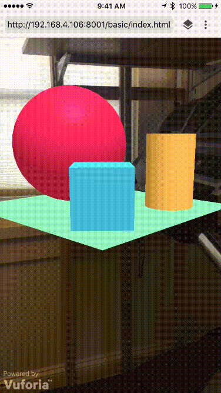
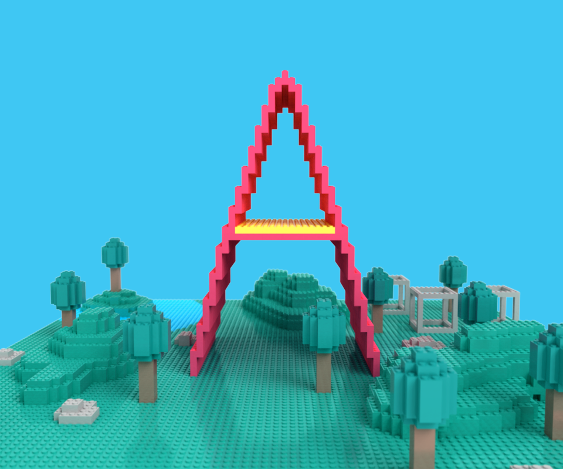

Blog
A-Frame v0.3.0 - Walk in a Web Page

A-Frame v0.3.0 has dropped! With support for the new WebVR 1.0 API, we aim higher towards state-of-the-art VR. With room-scale tracking, we can walk in a web page, and with tracked controller support, we can reach out into the world.
Grab the latest build at https://aframe.io/releases/0.3.0/aframe.min.js or npm install aframe.
What’s New?
WebVR 1.0 support is the highlight of this release. This includes:
- Better room-scale support to be able to walk/dash/duck/jump in a web page with the HTC Vive.
- Hitting 90 frames per second due to being able to push content directly to the headset display rather than mirroring a desktop display. This also allows us to have different content on the desktop display than the headset, opening the door for asynchronous gameplay and spectator modes.
As a corollary, A-Frame now supports tracked controllers with the HTC Vive. Tracked controllers go hand-in-hand with room-scale. Grab an HTC Vive and the experimental WebVR-enabled Chromium build (which currently supports the Vive) and try out the basic hand controls demo or ball throw.
We are also releasing the much-anticipated A-Frame Inspector (view
demo). The current primary purpose of the Inspector is to
serve as a complementary tool for inspecting and tweaking scenes alongside
code; it is more akin to your favorite browser’s DOM Inspector rather than
an end-to-end tool such as Unity. The easiest way to try out the A-Frame
Inspector is to press <ctrl> + <alt> + i on any A-Frame scene using v0.3.0.

Other noteworthy changes include significant performance improvements, improved support for multiple scenes embedded within a single webpage, and support for multiple instances of components of the same type.
Check out the release notes for the complete changelog, which includes a list of possible breaking changes.
What Have People Built?
A-Frame’s popularity has grown immensely, leading it to be the WebVR framework of choice. In less than a year, the GitHub repository has over 2800 stargazers and 60 contributors. There are over 1200 members on the A-Frame Slack channel.
We started producing weekly roundups with the A Week of A-Frame series to showcase community content, components, and contributions.
In the last four months, we have featured over 150 high quality scenes:
…and nearly 50 community components:
- Component Packs: aframe-extras by Don McCurdy enables additional controls, physics, and loaders. k-frame enables audio visualizations, multiuser, templating, layout, text, and improved animations.
- Geometries: Procedural geometries, Bitmap font text, terrains, oceans, and grids.
- Materials: GIF, HTML, cubemaps, stereo cubemaps, and video controls.
- Miscellaneous: Leap Motion controls, Vive controls, AltSpaceVR integration, glTF, and particle systems.
There have even been a couple of augmented reality prototypes:

What’s Next?
We want to make it easier to get started with A-Frame. This includes a refreshed homepage with new example scenes that act as starter kits. These examples will be accompanied with free assets, guides, and workflows tutorials on how to use A-Frame alongside tools such as MagicaVoxel and Blender.
We are also excited to improve the component discovery and consumption process to have an easy place to find great community components. We’ll also be thinking about asset curation and discovery which should sound great if you’ve ever had trouble finding free 3D models.
Check out the official roadmap for what we currently have planned over the next several months.
